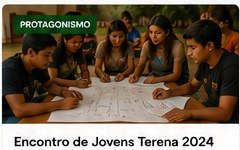
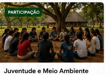

Protagonismo • aprendizado • participação
Juventude Terena
A força que mantém nossa cultura viva e constrói o futuro do nosso povo.
👥
Protagonismo Jovem
Juventude atuando e fazendo a diferença nas aldeias.
📖
Educação e Formação
Oportunidades de aprendizado e qualificação.
🪶
Cultura e Identidade
Fortalecendo tradições, língua e saberes ancestrais.
📣
Participação
Espaços de diálogo, representação e cidadania.
🚀
Oportunidades
Bolsas, editais, cursos e outras oportunidades.
Destaques da Juventude

Encontro de Jovens Terena
Jovens de várias aldeias se reúnem para planejar ações e fortalecer a união.
Ver detalhes →